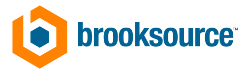

×Prepared for
Manufacturers evaluating a CESMII i3X Hackathon Kaizen
Manufacturers evaluating a CESMII i3X Hackathon Kaizen

×A CESMII i3X Hackathon Kaizen brings a manufacturer, its operating experts, technology teams, selected solution providers, and facilitators together around one real problem. The goal is not to run a technology demonstration. It is to produce a working capability, validate it in normal operations, and leave the manufacturer with a clearer path to reuse the result across additional assets, lines, plants, or applications.
The customer-facing piece begins with the manufacturer's problem and the engagement they are buying. It leverages an open framework, proven practices, and a structured methodology that aligns with how most companies already run continuous improvement — giving teams hands-on time against a real problem so the operating value and the ROI case build as the engagement runs, not after it.
The engagement combines two disciplines that create a controlled environment for moving from a known manufacturing constraint to a working, supportable solution.
A short, highly focused build cycle that forces the team to move from concept to working capability fast — no lengthy phased development, no waiting between decisions.
Begins with the current operating condition, tests a practical improvement, measures the result against baseline, and establishes a better way of working — not just a one-time demo.
The value is not only the first solution. It is the reduction in effort required to build the second one.
A working solution tied to a defined operating problem
A documented baseline and measured result
An i3X-based integration and information pattern
A clear view of what can be reused elsewhere
Identified gaps, exceptions, and support requirements
A practical deployment plan for the next site, asset, or use case
Reusable technical and operating assets
A record of what should remain proprietary and what can be shared safely
The engagement should begin with a problem that is narrow enough to address in a short cycle but important enough that improvement matters. Strong candidates share four characteristics.
A named operating owner
A measurable consequence
Available data or accessible systems
A workflow or decision that is currently too slow, manual, fragmented, or difficult to repeat
Each stage below opens to the full detail — what happens, what it produces, and why it matters to the sequence.
Define the current condition before discussing architecture.
Confirm systems, interfaces, data, and roles are ready.
The cross-functional team builds the smallest complete capability.
A successful demo is not yet a successful implementation.
A deliberate reuse decision, not an optional follow-up.
The team defines the current condition before discussing architecture. This includes the operating workflow, systems involved, available data, recurring exceptions, decision rights, baseline performance, and economic consequence. This stage prevents the engagement from becoming a technology exercise disconnected from operations.
The output is a concise challenge charter that defines:
Before the event, the engagement team confirms that the required systems, interfaces, data, credentials, test environments, and participant roles are ready. The objective is to spend the Hackathon Kaizen solving the problem, not waiting for access.
This preparation may include:
During the focused working session, the cross-functional team builds the smallest complete capability that can improve the target workflow or decision. The team may include plant operations, maintenance, quality, engineering, IT, OT, architecture, cybersecurity, technology providers, integrators, and application developers.
The work should produce:
A successful demonstration is not yet a successful implementation. The capability should operate for a defined validation period so the team can observe reliability, user adoption, data accuracy, exception behavior, security issues, support demand, changes in the operating measure, and differences between the demonstration environment and normal plant conditions. The team compares the result with the original baseline, corrects what did not work, and documents the improved method.
The engagement should end with a deliberate reuse decision.
The team identifies:
Judged on operating value, not a successful demo.
Judged on technical reliability and integration cost.
Judged on supportability and portability — can another team understand it, deploy it again, without starting over?
The third is often the hardest. Technical portability has limited value when the operating model remains entirely custom.
Can the application connect to another i3X-compliant environment without substantial redevelopment?
Can the application interpret assets, relationships, conditions, and events consistently across different equipment and plants?
Can another site adopt the workflow, decision rights, exception handling, training, and support model without reconstructing them from the beginning?
The actual timing depends on data access, cybersecurity requirements, system readiness, and the complexity of the selected use case.
The manufacturer remains the problem owner and decision authority.
Provides structure, facilitation, architecture support, working methods, documentation, and coordination across participants.
Support platform access, conformance, and product-specific implementation.
Build and test the capability.
Provides the i3X foundation, ecosystem context, technical resources, and stewardship of generalized learning where appropriate.
The strongest proof point is often the second deployment. A successful first implementation shows that the team solved a problem. A successful second implementation shows that the method may scale.
The engagement protects manufacturer confidentiality while contributing generalized patterns, test cases, tools, and lessons where appropriate. A record of what should remain proprietary and what can be shared safely is one of the deliverables — not an afterthought decided after the fact.
It is buying a faster and more disciplined way to answer several difficult questions at once.
That is the offer.
Separately, the package that supports this engagement should include the following as standing components — not documents assembled once per event.